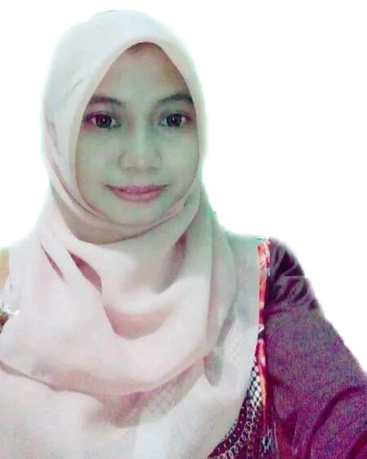
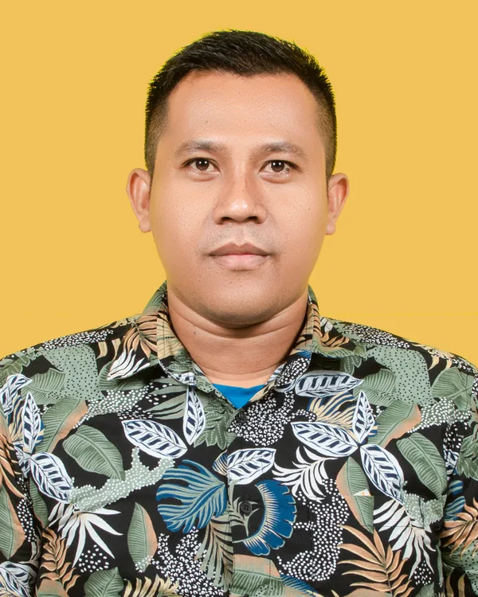
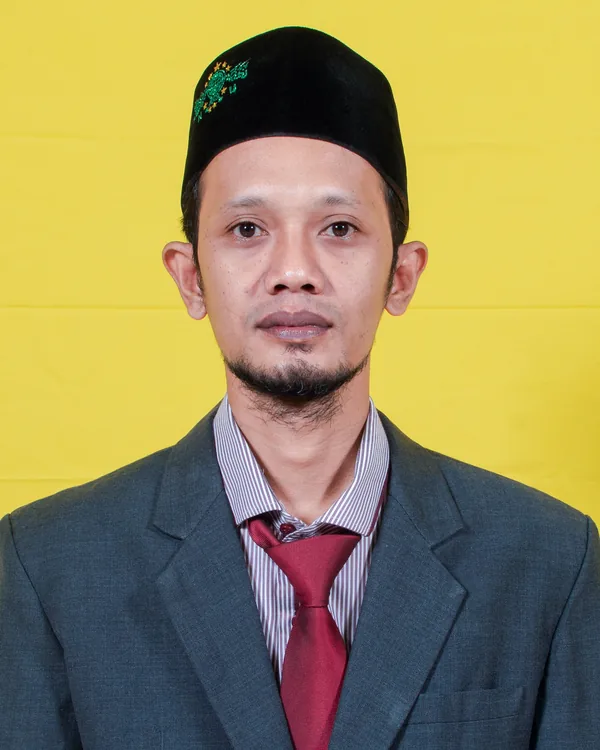
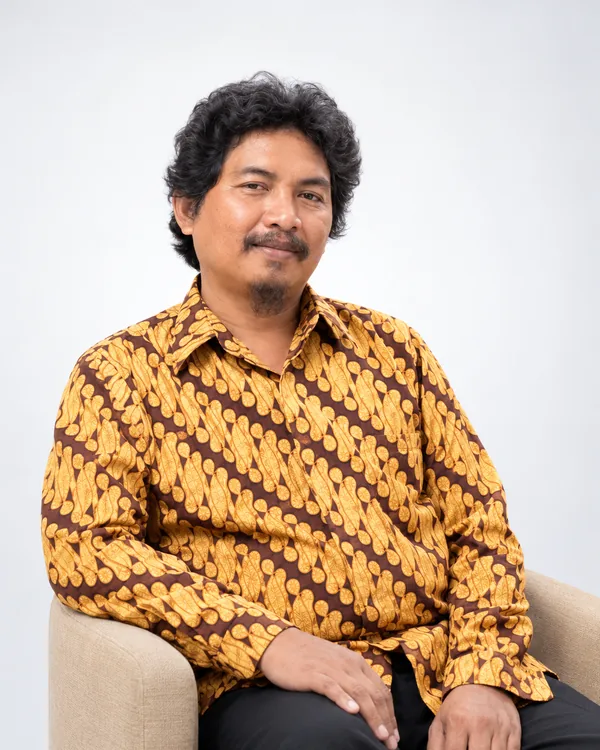
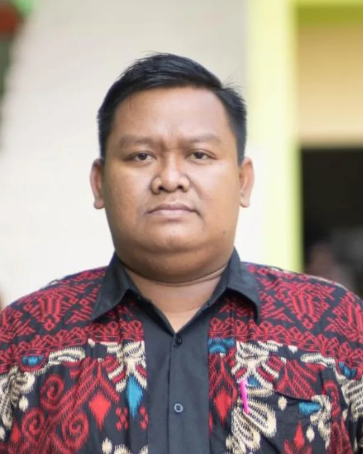
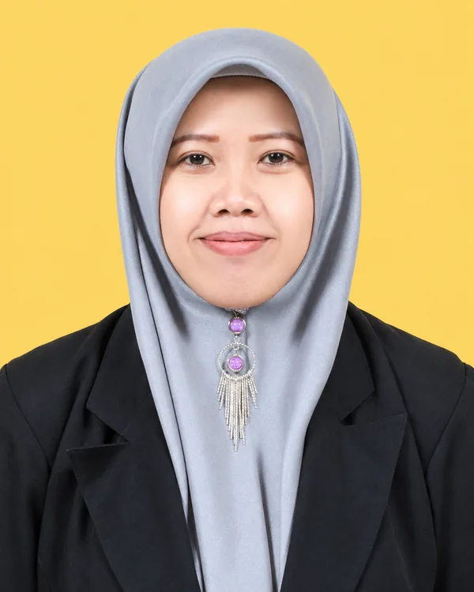
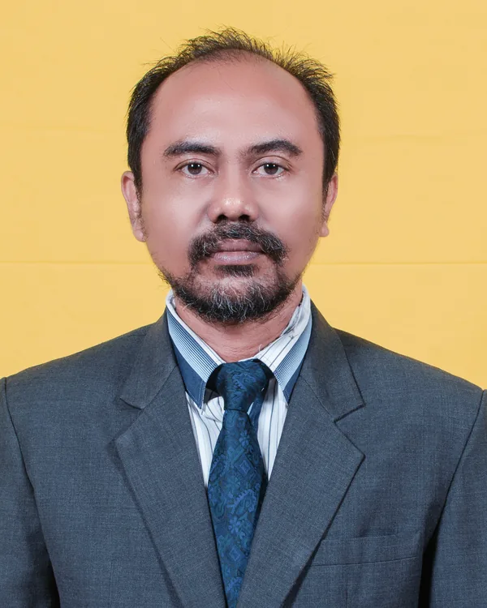

Waka Kurikulum
Umi Hanik, M.Pd
Pesan kepala sekolah
Jajaran pimpinan, pendidik, dan tenaga kependidikan yang mendampingi proses belajar serta pembentukan karakter peserta didik di SMK ITABA.

01 — Pesan kepala sekolah
Puji syukur kehadirat Allah SWT atas segala rahmat dan karunia-Nya. Website ini hadir sebagai sarana informasi, komunikasi, dan publikasi berbagai kegiatan serta perkembangan SMK ITABA kepada peserta didik, orang tua, masyarakat, dan dunia industri.
SMK ITABA berkomitmen menyelenggarakan pendidikan yang memadukan kompetensi kejuruan, pendidikan karakter, dan nilai-nilai keislaman, sehingga mampu melahirkan lulusan yang berakhlak mulia, kompeten, mandiri, inovatif, dan siap menghadapi dunia kerja serta tantangan global.
02 — Warga sekolah
Mendampingi secara profesional dalam bidang kurikulum, kesiswaan, hubungan industri, sarana, keahlian jurusan, hingga tata usaha dan data sekolah.






